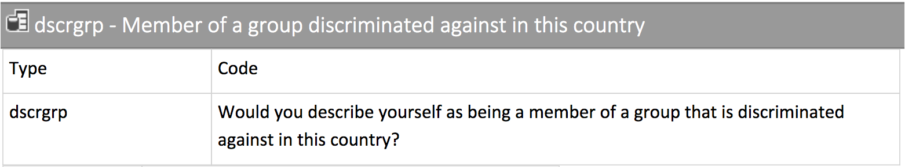

[1] 34 22 42 12 76[1] Europe Africa Africa Asia S. America
Levels: Africa Asia Australia Europe N. America S. America[1] FALSE TRUE TRUE TRUE TRUE[1] "Agnes" "Martin" "Hakan" "Tu" "Thais" [1] 1 0 3 0 4Data Frames & Tibbles
[1] 34 22 42 12 76[1] Europe Africa Africa Asia S. America
Levels: Africa Asia Australia Europe N. America S. America[1] FALSE TRUE TRUE TRUE TRUE[1] "Agnes" "Martin" "Hakan" "Tu" "Thais" [1] 1 0 3 0 4Data Frames
Data frames organize vectors of equal length along their indices.
name age conti employed nr_kids
1 Agnes 34 Europe FALSE 1
2 Martin 22 Africa TRUE 0
3 Hakan 42 Africa TRUE 3
4 Tu 12 Asia TRUE 0
5 Thais 76 S. America TRUE 4. . .
Data frames are the typical “rectangular” way to organize data:


Tibbles are data frames. But they have some improved features, so we will work with them.
name age conti employed nr_kids
1 Agnes 34 Europe FALSE 1
2 Martin 22 Africa TRUE 0
3 Hakan 42 Africa TRUE 3
4 Tu 12 Asia TRUE 0
5 Thais 76 S. America TRUE 4# A tibble: 5 × 5
name age conti employed nr_kids
<chr> <dbl> <fct> <lgl> <dbl>
1 Agnes 34 Europe FALSE 1
2 Martin 22 Africa TRUE 0
3 Hakan 42 Africa TRUE 3
4 Tu 12 Asia TRUE 0
5 Thais 76 S. America TRUE 4$ operator)[1] Europe Africa Africa Asia S. America
Levels: Africa Asia Australia Europe N. America S. America. . .
Min. 1st Qu. Median Mean 3rd Qu. Max.
12.0 22.0 34.0 37.2 42.0 76.0 . . .
Africa Asia Australia Europe N. America S. America
2 1 0 1 0 1 Wait, why does summary() give me first some summary statistics and then a frequency table?
select() several variables# A tibble: 5 × 2
name nr_kids
<chr> <dbl>
1 Agnes 1
2 Martin 0
3 Hakan 3
4 Tu 0
5 Thais 4select() several variablesselect() has a couple of nice helper functions, see ?select for details.
# A tibble: 5 × 2
name nr_kids
<chr> <dbl>
1 Agnes 1
2 Martin 0
3 Hakan 3
4 Tu 0
5 Thais 4filter() cases (Based on values in certain variables)# A tibble: 2 × 5
name age conti employed nr_kids
<chr> <dbl> <fct> <lgl> <dbl>
1 Martin 22 Africa TRUE 0
2 Hakan 42 Africa TRUE 3. . .
# A tibble: 2 × 5
name age conti employed nr_kids
<chr> <dbl> <fct> <lgl> <dbl>
1 Martin 22 Africa TRUE 0
2 Hakan 42 Africa TRUE 3Why is there a , after "Africa"?
In contrast to vectors, data frames and tibbles have rows and columns. As in matrix algebra, R’s index thus distinguishes [rows, columns]. The , after "Africa" tells R that we talk about rows. To understand how the index method works, remember logical vectors:
[1] Europe Africa Africa Asia S. America
Levels: Africa Asia Australia Europe N. America S. America[1] FALSE TRUE TRUE FALSE FALSE# A tibble: 2 × 5
name age conti employed nr_kids
<chr> <dbl> <fct> <lgl> <dbl>
1 Martin 22 Africa TRUE 0
2 Hakan 42 Africa TRUE 3. . .
# A tibble: 5 × 6
name age conti employed nr_kids selector
<chr> <dbl> <fct> <lgl> <dbl> <lgl>
1 Agnes 34 Europe FALSE 1 FALSE
2 Martin 22 Africa TRUE 0 TRUE
3 Hakan 42 Africa TRUE 3 TRUE
4 Tu 12 Asia TRUE 0 FALSE
5 Thais 76 S. America TRUE 4 FALSE To transform and recode simply use $ to clarify which tibble you are referring to.
[1] -3.2 -15.2 4.8 -25.2 38.8[1] Europe Afrika! Afrika! Asia S. America
Levels: Afrika! Asia Australia Europe N. America S. America. . .
If you rather want to generate a new variable, just give it a name.
[1] -0.1305090 -0.6199178 0.1957635 -1.0277584 1.5824217If you want to transform and recode several variables from the same tibble, get used to use mutate(). ::: {.note} You will better understand why in Session 6 on piping! :::
# A tibble: 5 × 8
name age conti employed nr_kids selector z_age z_nr_kids
<chr> <dbl> <fct> <lgl> <dbl> <lgl> <dbl> <dbl>
1 Agnes -3.20 Europa! FALSE -0.6 FALSE -0.131 -0.330
2 Martin -15.2 Afrika! TRUE -1.6 TRUE -0.620 -0.881
3 Hakan 4.8 Afrika! TRUE 1.4 TRUE 0.196 0.771
4 Tu -25.2 Asien! TRUE -1.6 FALSE -1.03 -0.881
5 Thais 38.8 S. America TRUE 2.4 FALSE 1.58 1.32 Also, look how RStudio structures the brackets. It helps you to understand, within which function things are happening.
To transform/recode only among certain cases, use case_when().
# A tibble: 5 × 8
name age conti employed nr_kids selector z_age z_nr_kids
<chr> <dbl> <chr> <lgl> <dbl> <lgl> <dbl> <dbl>
1 Agnes -3.20 Europa! FALSE -0.6 FALSE -0.131 -0.330
2 Martin -15.2 Antarctica TRUE -1.6 TRUE -0.620 -0.881
3 Hakan 4.8 Afrika! TRUE 1.4 TRUE 0.196 0.771
4 Tu -25.2 Antarctica TRUE -1.6 FALSE -1.03 -0.881
5 Thais 38.8 S. America TRUE 2.4 FALSE 1.58 1.32 The three lines of this case_when() application do the following thing:
case_when() "Atlantis" and "Antarctica" as new values, it assumes that we want to make conti a character vector. Thus we cannot supply the former factor values (which are integer) in line three.case_when() and NA# A tibble: 5 × 8
name age conti employed nr_kids selector z_age z_nr_kids
<chr> <dbl> <chr> <lgl> <dbl> <lgl> <dbl> <dbl>
1 Agnes -3.20 <NA> FALSE -0.6 FALSE -0.131 -0.330
2 Martin -15.2 Antarctica TRUE -1.6 TRUE -0.620 -0.881
3 Hakan 4.8 <NA> TRUE 1.4 TRUE 0.196 0.771
4 Tu -25.2 Antarctica TRUE -1.6 FALSE -1.03 -0.881
5 Thais 38.8 <NA> TRUE 2.4 FALSE 1.58 1.32 In R vectors are type sensitive; the elements of one vector may only be of one type. If you type ?NA, you will learn:
“NA is a logical constant of length 1 which contains a missing value indicator. NA can be coerced to any other vector type except raw.”
case_when() and NANA are type sensitive, too! Therefore, coerce NA to character/numeric with as.character()/as.numeric().
# A tibble: 5 × 8
name age conti employed nr_kids selector z_age z_nr_kids
<chr> <dbl> <chr> <lgl> <dbl> <lgl> <dbl> <dbl>
1 Agnes -3.20 <NA> FALSE -0.6 FALSE -0.131 -0.330
2 Martin -15.2 Antarctica TRUE -1.6 TRUE -0.620 -0.881
3 Hakan 4.8 <NA> TRUE 1.4 TRUE 0.196 0.771
4 Tu -25.2 Antarctica TRUE -1.6 FALSE -1.03 -0.881
5 Thais 38.8 <NA> TRUE 2.4 FALSE 1.58 1.32 Alternatively, you can also use type-specific NA: NA_character_, NA_real_, etc..
Please register as a user:

The classic way to work with actual data, is to download them to some folder and to then import them to your software environment. The tidyverse contains the following three packages:


Beware, however, that using an API assumes you have internet access! It thus makes sense to have an extra R-Script for Data import and transformation, and then other ones for data analyses and visualization.

. . .
Not very telling…
But remember, R does not do labels,
in contrast to Stata or SPSS!

R imports Stata and SPSS labels, but cannot handle them. Thus, when you import Stata or SPSS data,
… you need to change each labelled variable to numeric or factor from the outset of your analysis!!
If you want to use a variable as categorical, use as_factor() to make the labels the new factor levels:
If you want to use a variable as numeric, use zap_labels() to prohibit problems with the imported labels:
[row, column].[row, column], but the filter() and select() functions have advantages.zap_labels() from numeric variables and to treat categorical variables as_factor().$: Allows your to address vectors contained in a data frame/tibble.data.frame(): organize several vectors of equal length by their index.as_tibble(): take a data frame and make it a Tibble.summary(): Give a summary of an object.select(): select several variables from a data frame/Tibble.filter(): filter cases based on values in certain variables.mutate(): Adds new variables and preserves existing. Good for recoding several variables.case_when(): Conditional recode for cases filtered in complex ways.as_factor(): Make a labelled Stata/SPSS variable a factor.zap_labels(): Make a labelled Stata/SPSS variable numeric.